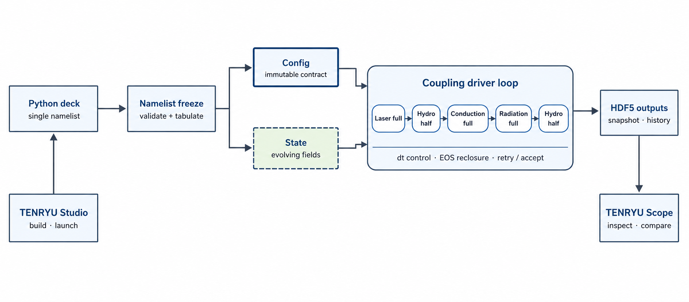

Architecture & module map reference
TENRYU is a CUDA-only code that freezes a Python namelist into plain data during initialization, then lets clearly bounded physics modules update shared GPU-resident State. The coupling driver centrally owns operator order, time-step selection, retry, and thermodynamic reclosure between operators; HDF5 products are consumed by TENRYU Studio and TENRYU Scope.
Design principles and build boundary
The first principle is GPU-first execution. Hydrodynamics, FLD and SN radiation, and laser ray tracing perform their principal work on NVIDIA GPUs; non-CUDA backends are unsupported. Locality reduces global MPI communication, and fixed dependency directions separate Hydro, Radiation, Laser, Materials, Mesh, Coupling, Diagnostics, I/O, and Driver. Same-GPU, same-configuration reproducibility is an architectural contract.
The core uses C++20 and CUDA C++ with CMake (3.25 or newer) and Ninja. Dependencies include CUDA Toolkit 12.x (12.0 or newer), MPI 3.1+, HDF5 1.12+, Python 3.10+, and pybind11 2.11+ — the same requirement set the Building page tabulates. Embedded Python reads the single namelist and is released after configuration. MPI and parallel HDF5 provide distributed execution and collective I/O.

Module map
The module split specifies ownership and dependency direction. Conduction advances as a separate operator, but its implementation lives under Hydro and its sequence placement belongs to Coupling.
| Module | One-line responsibility |
|---|---|
core/ | Provides configuration, namelist freezing, units, errors, profiling, common device arrays, and scratch facilities used across layers. |
mesh/ | Owns Lagrangian and ALE meshes, RZ geometry, face/node connectivity, neighborhoods, and mesh-quality contracts. |
hydro/ | Updates momentum, position, density, ion/electron internal energy, and boundaries, and implements electron/ion conduction. |
radiation/ | Provides 1D/2D multigroup FLD and SN, radiation sources, matter exchange, and boundary tallies. |
laser/ | Traces refracting rays, applies inverse-bremsstrahlung absorption, and deposits energy conservatively on the Hydro mesh. |
materials/ | Maps state to EOS, opacity, conductivity, relaxation, mean-ionization, and related material coefficients. |
burn/ | Advances Bosch–Hale reaction rates, per-cell species networks, product-energy deposition, and species ledgers. |
coupling/ | Owns operator splitting, dt selection, source injection, EOS reclosure, and acceptance of full-step retries. |
diagnostics/ | Builds ICF observables and audits such as energy budgets, areal density, sphericity, and shell tracking. |
drivers/ | Implements the run/verify entry points that assemble Config, mesh, State, callbacks, and the run lifecycle. |
Config, State, and the coupling driver
A .py namelist reaches the Builder through CPython and pybind11. The Builder checks types, units, ranges, and cross-field invariants before applying defaults. Geometry callables are evaluated into State arrays; waveforms and time-dependent boundaries become FrozenTable1D. The source and frozen JSON can be stored in HDF5.
Config is passed by const reference to module initialization, with only required fields copied to the GPU. State owns evolving mesh coordinates, density, velocity, 2T energies, pressures, radiation fields, deposition, and ledgers.
The coupling driver is the owner of time evolution, not another physics kernel. It chooses dt from the Hydro CFL, conduction and radiation limits, user and output caps, then applies the growth limit relative to the previous accepted step. It calls laser full, hydro half, conduction full, radiation full, and hydro half, inserting required EOS synchronization and halo exchange between operators. When full-step retry is enabled, the driver snapshots State at step entry. An inadmissible Hydro corrector causes a restore, dt halving, and repetition of the entire split sequence. History, snapshots, checkpoints, and cumulative energy accounting sit below the acceptance boundary, so rejected attempts do not become official output.
Device-memory idioms
Typed DeviceArray<T> and dimension-specific Field wrappers make ownership, moves, and reset explicit. Temporary workspaces use process-lifetime, named, grow-only scratch pools with unique tags for simultaneous buffers. Acquisition has cudaMalloc's uninitialized-content contract, so required zeroing is explicit. Pooled wrappers do not free individually; shutdown releases the pools together. This removes repeated time-loop allocation while preventing aliasing and dependence on old contents.
The two desktop applications
TENRYU Studio — build and run
TENRYU Studio is a Tauri 2 and React/TypeScript form-based deck application. It configures the run and generates a Python deck with embedded state for round-trip editing. It validates decks and uses system ssh/scp for configured servers. Its final artifact is the same single-namelist contract accepted by the CLI.
TENRYU Scope — inspect and compare
TENRYU Scope specializes in HDF5 snapshots and history. It opens local or remote runs, then renders 1D profiles, histories, and 2D tensor or CSR (compressed-sparse-row connectivity) multiblock fields. It provides colormaps, linear/log ranges, zoom/pan, time animation, lineouts, laser-ray overlays, and PNG, CSV, or video export, separating result exploration from deck authoring.